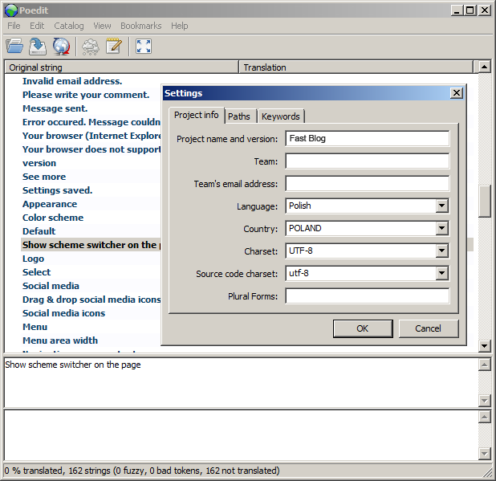

Version: 1.5.1
Created: 21 June 2012
Website: http://themeforest.net/item/website-responsive-wordpress-theme/1739143/
Demo: http://themes.kubasto.com/website/
Website is a responsive WordPress theme, which means it adapts to the device on which it's presented. Actually, it presents one of 4 generated versions:
desktop - for displays wider than 979 px
tablet - for displays 740 - 979 px wide
mobile - for displays 320 - 739 px wide
mini - for displays narrower then 320 px
The theme cares for your content so it looks great on all versions, but you can also decide to show part of a content on some versions only, and hide on others (read more about it here). Website has a lot of features, and most of them are intuitive to use, but if you need a deeper insight, this is the documentation prepared for you. Thanks for buying, and enjoy :)
FTP method:
Upload just the contents of the website folder to the wp-content/themes folder on your server.
Activate the theme through the Appearance / Themes menu in WordPress.
Open the theme configuration page and set up theme options.
Pure WordPress method:
Extract package downloaded form ThemeForest, compress just the website folder and upload it using Appreance / Themes / Install Themes uploader.
Important note: After activating the theme, please go to Settings / Permalinks and click Save changes.
Enjoy your new theme!
If you plan to use self-hosted video or audio files (and not for example YouTube or vimeo), there is one more thing you need to do:
Download JW Player (I couldn't attach it due its license limitations) and WhoTube skin for it. Before you download JW Player, make sure to uncheck "Include Viral, a video sharing plugin". Put JW Player and the skin in wp-content/themes/website/data/jwplayer folder. Make sure, skin remains in it's separate folder (so as a result you get this kind of paths to crucial files: data/jwplayer/jwplayer.js and data/jwplayer/whutube/whotube.xml).
If you wish to have the same content I've created for theme's demo site, you can import XML to your WordPress from the demo_content folder. Use WordPress Importer plugin to do it. Just remember it doesn't affect Theme Options.
I don't recommend importing this file on your production site. Just on the test site, if you have one (it's good to have one).
To create contact form page, select Contact form as a template when you create or edit page.
To add contact page to the footer, drag and drop Contact form widget to the Footer sidebar.
Create or edit page or post, and in the Options box set Sidebar to None.
If you are not familiar with shortcodes, these are extra magic spells to use in text which can for example add a special highlight or text box. You just start with opening shortcode, put some text or other stuff inside and write closing shortcode on the end. Some shortcodes don’t need the closing tag (for example horizontal lines). If you want to learn more how to use shortcodes and watch examples, check them online on the Website demo.
There are 9 shortcodes with lots of parameters:
| Shortcode | Parameter | Allowed values | Default value |
|---|---|---|---|
dropcap, dc |
|||
hr, line |
|||
mark, highlight |
color | yellow | |
quote |
align | none, left, right | none |
| width | [number]px, [number]% | 100% | |
icon |
name | address, administrative-docs, advertising, archives... (all filenames from the data/img/icons/16 and data/img/icons/32 folders) |
|
| size | small, big | small | |
tooltip, tip |
title | [text] | |
| gravity | nw, n, ne, w, e, sw, s, se | n | |
list |
icon | address, administrative-docs, advertising, archives... (all filenames from the data/img/icons/16 and data/img/icons/32 folders) |
|
button |
type | tiny, small, normal, big | normal |
| url | [url address] | ||
| target | self, parent, top, blank | self | |
| icon | address, administrative-docs, advertising, archives... (all filenames from the data/img/icons/16 and data/img/icons/32 folders) |
||
box |
color | green, orange, red, blue, gray | blue |
| icon | address, administrative-docs, advertising, archives... (all filenames from the data/img/icons/16 and data/img/icons/32 folders) |
||
| size | small, big | small | |
column, col |
width | [number]/[number] | 1/2 |
| first | first, yes, true | ||
| last | last, yes, true | ||
tab |
label | [text] | |
| first | first, yes, true | ||
| last | last, yes, true | ||
| active | active, yes, true | ||
media |
version | all, lte-tablet, lte-mobile, lte-mini, gte-desktop, gte-tablet, gte-mobile, desktop, tablet, mobile, mini | all |
| visible | yes, true, no, false | yes | |
| type | block, inline | block |
You can preview all icons in the data/img/icons folder. You can also add new icons (16x16px and 32x32px) there – they will work the same way as all, just use their name as parameters value.
There are 4 versions of the site - desktop, tablet, mobile and mini. By default all content is the same for all versions. If you want to hide part of a content for some site versions (e.g mobiles), or show just only some versions, use the [media] shortcode described in the chapter above.
[media] shortcode has 3 parameters:
version - describes type of devices for which you want to show / hide content placed inside the shortcode. Available basic values are: desktop, tablet, mobile, mini. If you want to describe more versions in the same time, you can use the gte- prefix (grater or equal) or lte- (lower or equal). E.g.:
lte-mobile defines both mobile and mini versions.
gte-mobile defines all versions except mini.
visible - defines if you want to hide or show content specified by the version parameter. E.g.:
This part of content is visible for everyone.
[media version="lte-mobile" visible="false"]
This part of content is hidden on mobile devices (which means its visible only on tablet and desktop displays).
[/media]
or:
[media version="tablet" visible="true"]
This paragraph is visible on tablet only.
[/media]
Parameter visible by default is true so in that case you may skip it.
Below is an example of using two different contents - one for desktop devices, second for mobiles:
[media version="gte-tablet"]
Content for tablets and desktops.
[/media]
[media version="lte-mobile"]
Content for mobiles.
[/media]
And this part of content is visible on all devices.
[media] blocks may consist a lot of text, images and even other shortcodes with no limits.
Theme has an update notifier, so you will be noticed in your admin area if a new version will be released. The best method to update would be: upload all files to your server, replacing the old ones. No data nor settings will be lost (unless you've made some custom changes to the files by yourself before).
Make sure the data/cache folder in the theme's folder has 777 permissions. If you don't know how to change it, use this tutorial.
Make sure you've uploaded JW Player on your server in the right location. It's described in the Installation chapter of this documentation.
Use the # sign as a custom link URL of the desired menu item in Appearance / Menus.
Check IDs of the images you want to exclude in the Media Library (move cursor over thumbnail and read the attachment_id parameter from the status bar in your browser). E.g.:
http://mydomain.com/wp-admin/media.php?attachment_id=32&action=edit
Now edit page (in the HTML editor mode) which contains the gallery and add the exclude parameter to the gallery shortcode with the ID's separated with commas E.g.:
[gallery columns="4" exclude="32,40"]
Probably because of the responsiveness feature, which deals with images special way. So, to fix it, add no-responsive class to all images used in the custom code. For example:
<img src="http://domain.com/image.png" class="no-responsive" />
If you install or set your WordPress in your language, also theme will use this language if it's supported. If you want to add another translation of the theme, below is a short instruction:
For translations I recommend Poedit tool.
Create a copy of the xx_XX.po file (from languages) and rename it respectively to your language (check proper name here. For example Swiss German would be de_CH.po).

It seems a little harsh, but this is the proper way. If you need more details, check here.
There are a lot of layered and sliced Photoshop .psd files prepared for you in the psd folder. Most of them are grouped in theme color versions folders.
Some options, which are not available in Theme Options can be set by defining PHP constants. To do that, create const.php file in the main folder of the theme, and define one of these constants:
| Constant's name | Default value | Description |
|---|---|---|
WEBSITE_DEBUG |
false |
Turns on debugging mode. For example, it cause that developer versions of CSS and JS are attached, and not the minified versions. |
WEBSITE_ADDITIONAL_SIDEBARS_COUNT |
3 |
Number of additional sidebars. |
WEBSITE_SOCIAL_WIDGET_SLOT_COUNT |
8 |
Number of slots in the Social media widget. |
WEBSITE_SCHEME_SWITCHER |
false |
Turns on scheme switcher using GET parameter. E.g. http://yourdomain.com/?scheme=dark. |
Example content of the const.php file:
<?php
define('WEBSITE_ADDITIONAL_SIDEBARS_COUNT', 5);
define('WEBSITE_SOCIAL_WIDGET_SLOT_COUNT', 12);
?>
Fancybox
FlexSlider
html5.js
jquery.cookie
jQuery Flickr Feed Plugin
JSColor
masonry
minify
PC.DE Bremen icon pack
prefixfree
Respond.js
tipsy
tweet!
yaselect
Video.js
WPZOOM Social Networking Icon Set
Website 1.5.1
Website 1.5
Website 1.4
Website 1.3
Website 1.2
Website 1.1
Website 1.0
for purchasing this theme. If you have further questions don't hesitate to ask. The best way to contact me is the contact form on my profile page.
Kuba Sto